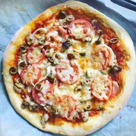

Our Delicious Recipes
Colorful, easy roasted vegetables made for Cook and Book. Delicious.. By Jody Fernandez

Fresh, delicious produce like cauliflower, green beans, and Brussels sprouts--what could be more healthy or satisfying? Here is a flavorful medley of baked vegetables. Be good to yourself and enjoy!.. By CURTONA

This recipe combines a perfect blend of spices for roasted vegetables and makes a great low-calorie side dish for anyone watching their waistline! This is also a great way to get your kids to eat vegetables.. By ChefKatie
Give your chicken a quick dip in a Greek-inspired mixture of olive oil, vinegar, lemon juice, and herbs before threading them onto skewers with bell pepper, mushrooms, and tomatoes.. By Carl Hanson
This is a cocktail riff on a lemonade recipe we love (magazine.com/rosemary-infused-watermelon-lemonade). The herb-melon combo is delicious, and watermelon's natural sweetness keeps added sugar low.
You can make this avocado salad smooth or chunky depending on your tastes. Simply a quick recipe for tasty guacamole! Great with tortilla chips or as a topping for Mexican foods!
Crisp edges, chewy middles, and so, so easy to make. Try this wildly-popular
Here is a simple but delicious crepe batter which can be made in minutes. It's made from ingredients that everyone has on hand.
These crackpot baked potatoes are a super-easy way to bake potatoes without heating the kitchen. A step-by-step recipe for making a baked potato. Serve with your choice of toppings. Try sour cream and chives, cheese, and olives.


This is a great recipe when you don't want to wait for the dough to rise. You just mix it and allow it to rest for 5 minutes and then it's ready to go! It yields a soft, chewy crust.
Fresh tomatoes and a rich, cheesy filling make a summertime savory pie. There is a lot of preparation for this pie, but it is well worth every minute. I love this pie on summer mountain evenings. Enjoy with cool ice tea.